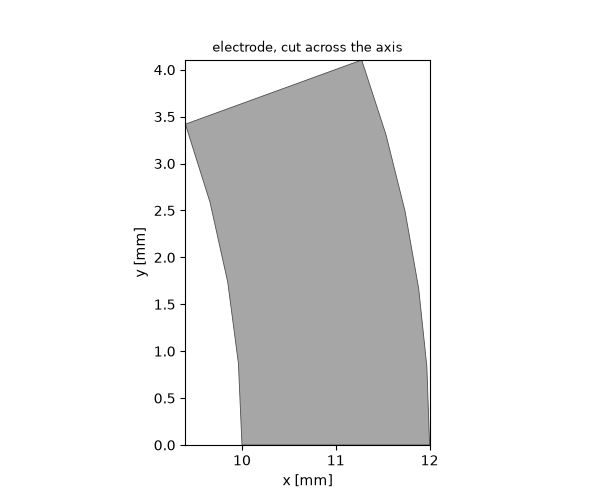
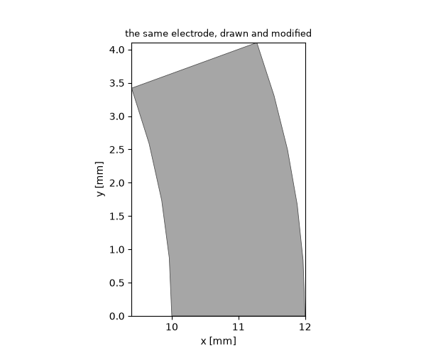
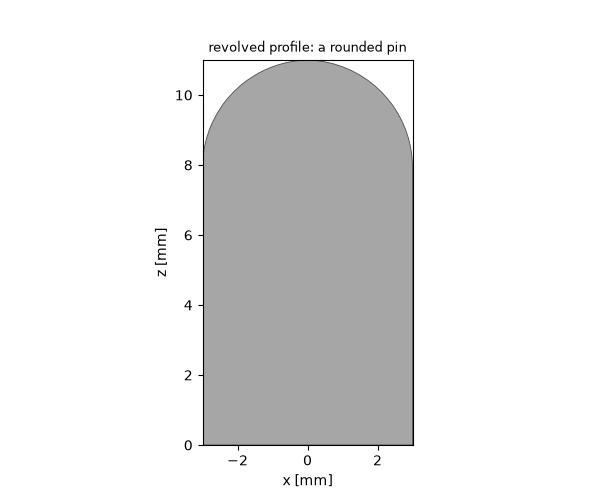
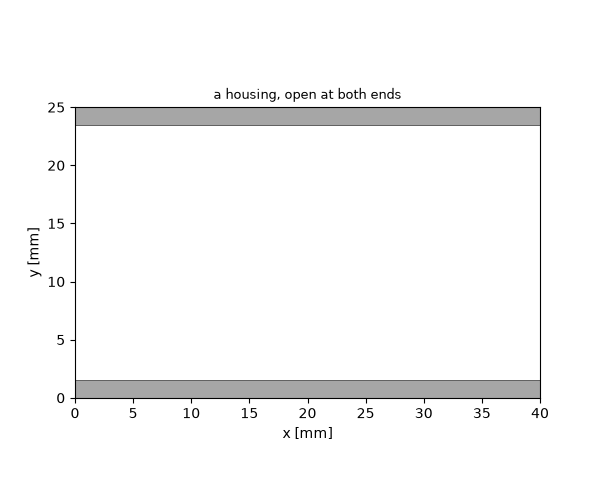
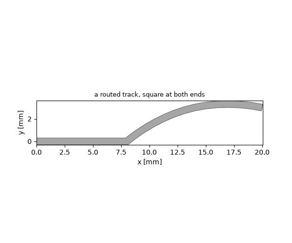
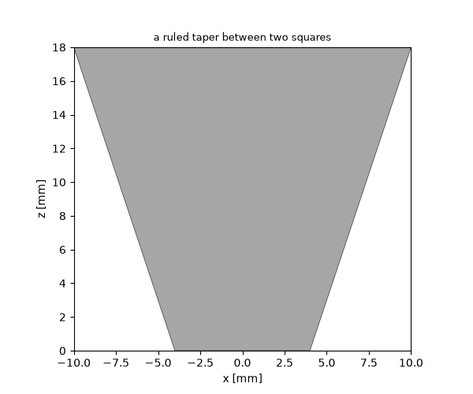

Note
Go to the end to download the full example code.
Profiles: shapes the primitives do not cover#
Bricks, cylinders, cones and spheres carry most models, and Boolean operations carry most of the rest. Sooner or later a part resists both: a curved electrode that is a slice of a tube, a pad with one rounded end, a track that follows a route, a taper between two different cross-sections. Cutting those out of primitives means inventing tool bodies whose only purpose is to be subtracted, and getting their dimensions right by hand.
The way out is the one a draughtsman uses: draw the outline, then give it a third dimension. This tutorial builds that path — a curve, a closed profile, a solid — and then the three verbs that operate on whole shapes rather than outlines: hollowing, tracking, and lofting.
Nothing here runs a simulation; it is geometry only, and takes seconds.
import math
import magnelio as mio
from magnelio import geo, plots
copper = mio.Material.lossy_metal(name="copper", sigma=5.8e7)
A worked example: a curved electrode#
A 20 degree slice of a tube — 24 mm across, 2 mm wall, 30 mm tall. Two independent ways to build it, and it is worth seeing both, because the choice between them comes up again for every part.
The first is a primitive. A cylinder takes a bore and an angular extent, so the electrode is one call:

The same part, drawn as a profile#
The second way draws the cross-section and extrudes it. A
Path is a pen: it starts at a point and
remembers where the last segment ended, so each call only names where
the segment goes.
Two of the four sides are arcs about the axis. An arc through a
centre has two solutions — the short way round and the long way — so
normal= names the axis the arc turns about, and the arc runs
counter-clockwise about it. That is the same sense as
rotated(), and it settles the ambiguity even
for a half-circle, where the two ends alone say nothing at all.
CENTRE = (0.0, 0.0, 0.0)
def on_circle(radius, angle_deg):
"""A point on a circle about the origin, in the z = 0 plane."""
angle = math.radians(angle_deg)
return (radius * math.cos(angle), radius * math.sin(angle), 0.0)
outline = (
geo.Path(on_circle(R_IN, 0.0))
.line_to(on_circle(R_OUT, 0.0))
.arc_to(on_circle(R_OUT, SPAN), center=CENTRE, normal="z")
.line_to(on_circle(R_IN, SPAN))
.arc_to(on_circle(R_IN, 0.0), center=CENTRE, normal=(0.0, 0.0, -1.0))
.closed()
)
drawn = outline.covered().extruded(vector=(0.0, 0.0, HEIGHT), material="pec")
# The two routes describe the same solid, and `volume()` is the way to
# say so: it reports what the CAD kernel actually built, not what the
# parameters nominally asked for. They are built by different kernel
# operations, so they agree to numerical precision rather than bit for
# bit -- the level of agreement to expect whenever one part can be
# built two ways.
print(f"primitive: {electrode.volume() * 1e9:.6f} mm^3")
print(f"drawn: {drawn.volume() * 1e9:.6f} mm^3")
print(f"relative difference: {abs(drawn.volume() / electrode.volume() - 1.0):.2e}")
primitive: 230.383461 mm^3
drawn: 230.383461 mm^3
relative difference: 1.11e-15
Note
The inner arc turns about -z while the outer turns about
+z. The pen walks the outline as a loop, so it comes back
along the inside — and “counter-clockwise” is then the other way
round. If a profile comes out crossing itself, this is the first
thing to check.
Which route to prefer? The primitive, whenever it fits: it is one line, it carries its dimensions as named parameters, and the mesher gets an exact analytic surface. The profile route earns its keep the moment the outline is not a plain sector — a broken edge, a keyway, a flat on one side. Adding a chamfer to the inner corner is one more segment in the pen stroke, and no new tool body:
CHAMFER = 1.0e-3
chamfered = (
geo.Path(on_circle(R_IN, 0.0))
.line_to(on_circle(R_OUT - CHAMFER, 0.0))
.line_to((*on_circle(R_OUT, 0.0)[:2], 0.0))
.arc_to(on_circle(R_OUT, SPAN), center=CENTRE, normal="z")
.line_to(on_circle(R_IN, SPAN))
.arc_to(on_circle(R_IN, 0.0), center=CENTRE, normal=(0.0, 0.0, -1.0))
.closed()
.covered()
.extruded(vector=(0.0, 0.0, HEIGHT), material="pec")
)
fig, ax = plots.plot_cross_section(
[chamfered], "z", HEIGHT / 2, title="the same electrode, drawn and modified"
)

A profile can also be revolved or swept#
The profile is the input, not the extrusion. The same closed curve
feeds three verbs: extruded() pushes it
along a vector, revolved() turns it about an
axis, and swept() runs it along a path.
Revolving is the direct way to any rotationally symmetric part whose outline is not a rectangle — a rounded-nose centre conductor, a stepped transformer, a bead. Here the outline is drawn in the x-z plane and turned about z:
nose = (
geo.Path((0.0, 0.0, 0.0))
.line_to((3.0e-3, 0.0, 0.0))
.line_to((3.0e-3, 0.0, 8.0e-3))
.arc_to((0.0, 0.0, 11.0e-3), via=(2.1e-3, 0.0, 10.1e-3))
.closed()
.covered()
.revolved(axis="z", material="pec")
)
fig, ax = plots.plot_cross_section([nose], "y", 0.0, title="revolved profile: a rounded pin")

Hollowing a solid#
A housing is a block with its inside removed, and the inside of
anything but a box is not the outside scaled down.
shelled() builds it directly: walls grow
inward, so the outer dimensions stay exactly as designed, and naming a
face leaves it out of the shell to become an opening.
WALL = 1.5e-3
BOX = (40.0e-3, 25.0e-3, 12.0e-3)
housing = geo.Brick(origin=(0.0, 0.0, 0.0), size=BOX, material="pec").shelled(
thickness=WALL,
opening_face_near=[(0.0, BOX[1] / 2, BOX[2] / 2), (BOX[0], BOX[1] / 2, BOX[2] / 2)],
)
fig, ax = plots.plot_cross_section([housing], "z", BOX[2] / 2, title="a housing, open at both ends")

Tracks that follow a route#
A feed line is a centreline with a width and a metal thickness.
traced() takes it that way, so a bend is one
segment of the path rather than a separate body to place.
caps="flat" matters more than it looks: a track that ends at a
port has to meet the port plane squarely, and the default rounded end
would leave a sliver of air there. Outside corners come out rounded,
which is what a fabricated track does too.
W_TRACK, T_COPPER = 0.6e-3, 35.0e-6
route = (
geo.Path((0.0, 0.0, 0.0))
.line_to((8.0e-3, 0.0, 0.0))
.spline_to((14.0e-3, 3.0e-3, 0.0), (20.0e-3, 3.0e-3, 0.0))
.curve()
)
track = route.traced(
width=W_TRACK,
thickness=T_COPPER,
caps="flat",
normal="z",
material=copper,
)
fig, ax = plots.plot_cross_section(
[track], "z", T_COPPER / 2, title="a routed track, square at both ends"
)

Tapers between two cross-sections#
The last gap the primitives leave is a transition: a horn, a matching
section, a change from a round cross-section to a rectangular one.
Loft takes the cross-sections themselves, in
the order the solid passes through them, and interpolates.
blend="ruled" joins them with straight surfaces, which is what a
machined taper is; the default blend="spline" passes one smooth
surface through all of them, for a flared horn.
Where the two ends are faces of solids that already exist, the
lofted() verb takes those instead, and adds a
third mode: blend="tangent" leaves each face along its own normal,
so a bend between two parts that face different directions comes out
smooth rather than creased.
def square(half, z):
"""A square outline of half-width *half*, at height *z*."""
return geo.Face(
normal="z",
points=[(-half, -half), (half, -half), (half, half), (-half, half)],
position=z,
)
taper = geo.Loft(square(4.0e-3, 0.0), square(10.0e-3, 18.0e-3), blend="ruled", material="pec")
fig, ax = plots.plot_cross_section([taper], "y", 0.0, title="a ruled taper between two squares")

What to take away#
Reach for a primitive first — a cylinder with
inner_radiusandangle_degcovers tubes and sectors without any drawing.When the outline is the thing you actually know, draw it with
Path, close it, and cover it. The resulting sheet is a profile forextruded/revolved/swept/thickened.An arc through a centre is ambiguous;
normal=removes the ambiguity, and the direction reverses when the pen comes back along the far side of a loop.ellipse_todraws an elliptical arc the same way — centre, the two semi-axes and the direction of the first,normal=for the sense — for the outlines of accelerator cells and lens profiles.shelledhollows,tracedfollows a route,Loftinterpolates cross-sections. Each replaces a construction that would otherwise be assembled from tool bodies by hand.volume()checks a construction against what it was supposed to be — the metal fraction of a housing, or two routes to the same part agreeing.
A profile carrying no material is a construction profile: it is not a physical object and cannot be meshed on its own, which is why the verbs that turn it into a solid ask for the material explicitly.
Total running time of the script: (0 minutes 0.488 seconds)